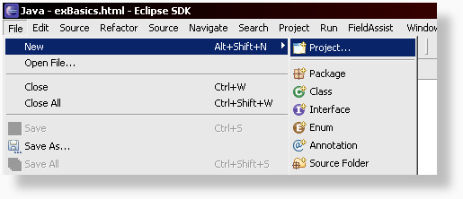
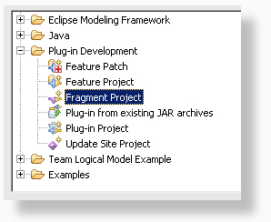
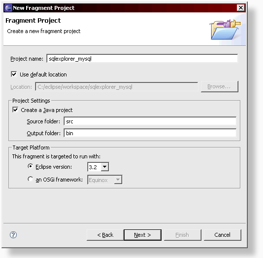
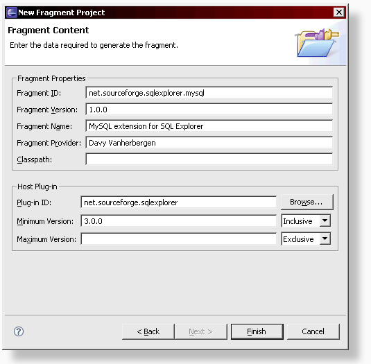
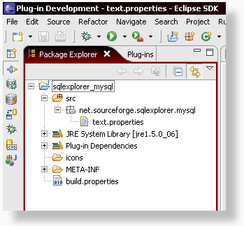

Creating a new plugin fragment for SQL Explorer
This short tutorial shows you how to create a new plugin fragment for SQL Explorer using eclipse. MySQL was used as an example for this tutorial, but don't create a new MySQL plugin, it already exists. Feel free to enhance it though ;-)
Before you start you need to have the SQL Explorer plugin available in eclipse. It can be either installed as a plugin, or if you downloaded the source from CVS and have a SQL Explorer project in your workspace, that will work too.
Ok, let's get started.
Step 1: Select File > New Project from the menu.

Step 2: In the new project wizard that has just appeared, select Fragment Project and click next.

Step 3: Enter your project details. As the project name, use sqlexplorer_<yourdbname>. The targeted runtime should be set to eclipse 3.2.

Step 4: Here we have to enter a few more details.
As the fragment id, use 'net.sourceforge.sqlexplorer.<yourdbname>'.
For the fragment version, you can start from 1.0.0 if you like. For the fragment name, I suggest using '<yourdbname> extension for SQL Explorer', but you are free
to use anything you like. The fragment provider should obviously be YOUR name.
As the plugin ID, enter 'net.sourceforge.sqlexplorer'. This is how your fragment will know
that it is an extension to the core SQL Explorer plugin. For the minimum version, enter the version number of the SQL Explorer version that you've got installed. This should be 3.0.0 or higher.

Step 5: We're almost done. Eclipse has created your brand new fragment and it should look almost the same as the one below. There are just a few more things to add. In the project root, add a new folder 'icons', we'll need this later on. In the source folder, add a new package named 'net.sourceforge.sqlexplorer.<yourdbname>' by right clicking on the folder and selecting New > Package. Once the package is created, right click on the package and select New > File. Create an empty file called 'text.properties'. We'll use this file later on to store all text strings for the project. It is important that this file is in the main package, otherwise it might not be found by the core plugin.

Congratulations. You've just created a new fragment project for SQL Explorer. Now head on over to the next section and create that feature you've been waiting to code!